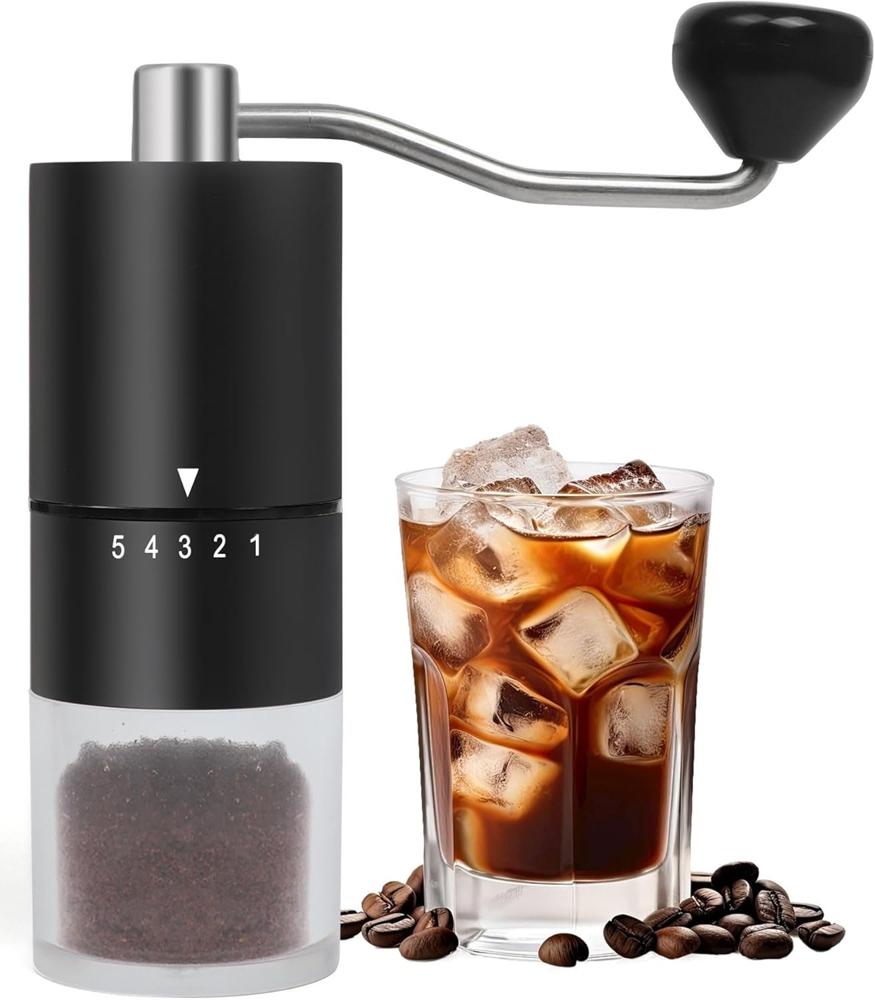

The Problem
The premise of this course is to take a manual product and design and integrate a system that will automate it, working in a team of four members. My team decided upon automating a manual coffee grinder. The design and customer requirements for the system are as follows.
Most of my group members did not feel strongly about which project to pick from the six choices, so I advocated for the coffee grinder because I enjoy drinking coffee and could see myself as a potential customer for the product. Having a personal stake in the outcome is an advantage in design — customer concerns become directly tied to the design process, which tends to produce more thoughtful and user-centered decisions.

We broke the system into two subsystems, each containing two subsections that address a distinct mechanical or software challenge.
Because we need high torque and a small range of motion, the natural choice for the team was a 0–180 degree servo motor. The follow-on engineering problem then became: how do we transmit the rotation from the servo to the grinder's adjustment dial?
The immediate candidates were a DC motor or a stepper motor. An additional design requirement the team established was stall detection — and the DC motor is the right choice to meet this. By monitoring current draw with a current sensing module, we can detect a stall without the step-skipping problems that would affect a stepper motor under load. As a bonus, since motor speed is controllable, we can track exactly how long the motor and burrs have been running, directly supporting the usage tracking requirement.
With only four months to develop this project, instead of building a market-ready app, the team prioritized a high-quality prototype — something easily replicated and usable on any user's phone, capable of reliably controlling the grinder within the user's home. We chose a WiFi HTTP approach to demonstrate full functionality. For future development, we recommend transitioning to a proper iOS/Android app using MQTT, which would enable control from anywhere and represent a significantly more finished product.
Manual Functionality
This subassembly covers all the physical functions of the device: the DC motor drive, grind time control, fineness setting switching, and noise output. It is the mechanical backbone of the system.
How It's Built
A gray 3D-printed frame with an integrated gasket holds the grinder body by friction fit, preventing the bottom half from rotating during operation. Screw holes on the back of the frame secure a bracketed servo motor in place. A 3D-printed fan belt attachment fits onto the servo motor coupling, and a rubber belt — glued and taped to a circular screw clamp — connects the two. Holes cut into the belt mesh with teeth on the fan belt attachment, allowing the servo to step the grind setting up or down through each fineness position.
The top frame is a separate 3D-printed part that friction fits over the top of the coffee grinder. It features holes that align with the motor's screw holes, allowing it to be bolted securely in place. A custom 3D-printed shaft coupling is pressed onto the motor shaft. To install, push the top frame down until resistance is felt, then twist and lightly press down to slot the grinder's shaft into the coupling.
How It Works
Once assembled, the system handles two independent physical functions. The DC motor drives the grinder burr through the shaft coupling, controlling grind time and duration. The servo motor, connected via the belt and fan belt attachment, rotates the grind setting collar up or down to the desired fineness level. Together these two actuators replicate the full manual operation of the grinder without any user input.
Subassembly 2
[Name — e.g. Control & Interface]
[TEMPLATE — replace with your answer]
What does this subassembly do? How does it integrate with Subassembly 1? What are the key components and how do they communicate?
What problems did you run into and how did you solve them?
Remaining Work
[TEMPLATE — replace with your answer]
What is left to complete the full integrated system? What are the remaining engineering challenges and how do you plan to tackle them?